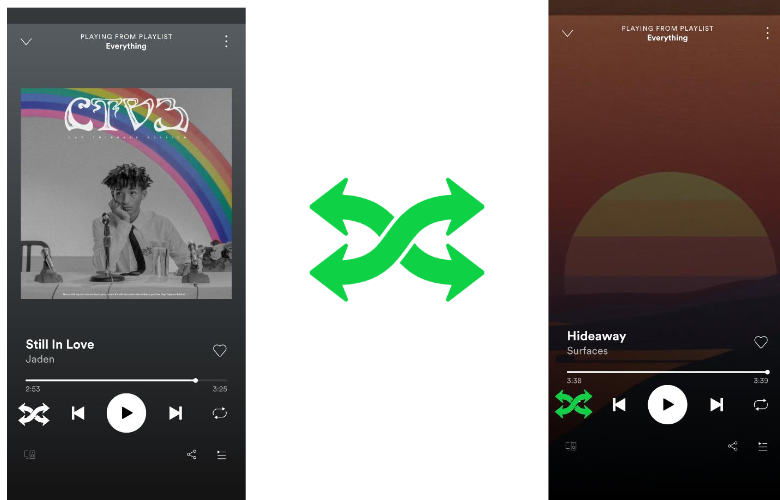

Imaginary App
Friction: Spoofy
The goal of this imaginary app was to create an app that introduces friction.
This means that the app does not flow smoothly and makes it frustating to use.
My app, Spoofy, is a play on Spotify.
I love listening to music and I am always using spotify.
Instead of creating a music app that everyone would hate to use,
I opted to "change" the basic funcionality of the app. For example the play/pause, skip,
and shuffle buttons all have a twist to make the app a little more frustating.
Shuffling will pick a random next song but also pick a random spot in the song.
Here is what the shuffle would look like:

Link to the full detailed app (.pdf).